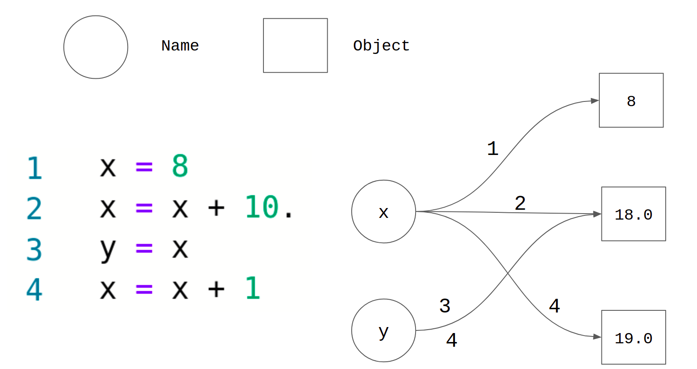

Lesson-2.1
Variables
Introduction
Variables are containers that are used to store values. Variables in Python are defined by using the assignment operator =. For example:
Variables can also be updated using the assignment operator:
The output is:
The initial value of x is 1
The value after updating x is 2Assignment Operator
The syntax of the assignment statement is as follows:
The assignment operator works from right to left. That is, the expression on the right is evaluated first. The value of this expression is assigned to the variable on the left. For example:
The output is:
4.0Having a literal to the left of the assignment operator will result in an error:
This will throw the following error:
SyntaxError: cannot assign to literalThe assignment statement maps or binds the variable name on the left to an object on the right. A closer look at the anatomy of an assignment statement:

The numbers on the arrow correspond to the line numbers in the code. The variables on the left side of the arrow bind to the objects on the right side after the corresponding line is executed. For example, the variable x binds to the object 8 - in this case an #!python int literal - after line 1 is executed. Note the period at the end of line 2 which makes 10 a #!py float. After the execution of line 2, 18.0 gets stored in x. The interesting part is line 3. Note that y = x makes both x and y bind to the same object. When x is updated in line-4, it binds to a new object. However, the value of y is not disturbed by this operation. It continues to be bound to the object 18.0 even after line-4 is executed.
As a final point, the assignment operator should not be confused with the equality operator:
The assignment operator is used for creating or updating variables whereas the equality operator is used when two expressions need to be compared. They cannot be used interchangeably!
!!! info “Dynamic Typing” Python supports what is called dynamic typing. In a dynamically typed language, a variable is simply a value bound to a name; the value has a type — like int or str — but the variable itself doesn’t 1. For example:
The output is:
<class 'int'>
<class 'float'>
<class 'str'>In the above example, a was initially bound to a value of type #!py int. After its update in line 3, it was bound to a value of type #!py float and after line 5, it becomes a #!py str. The image in the previous section will give a clearer picture of why this is the case.
Referencing versus Defining
When a variable that has already been defined is used in an expression, we say that the variable is being referenced. For example:
In line-2, we are referencing the variable x which was assigned a value in line-1. If a variable is referenced before it has been assigned a value, the interpreter throws an exception called NameError:
This is the output:
NameError: name 'someVar' is not definedKeywords and Naming Rules
Keywords are certain words in the Python language that have a special meaning. Some of them are listed below:
We have already seen some of them - not, and, or. We will come across all these keywords in upcoming chapters. Keywords cannot be used as names for variables. For example, the following line of code will throw a SyntaxError when executed:
Along with this restriction, there are certain other rules which have to be followed while choosing the names of variables in Python 2:
- A variable name can only contain alpha-numeric (alphabets and numbers) characters and underscores:
- a - z
- A - Z
- 0 - 9
- _
- A variable name must start with a letter or the underscore character.
A few observations that directly follow from the above rules:
A variable name cannot start with a number.
Variable names are case-sensitive (
age,AgeandAGEare three different variables).
Note that these are not merely conventions. Violating any one of these rules will result in a SyntaxError. As an example, the following code will throw a SyntaxError when executed:
SyntaxError: invalid decimal literalReusing Variables
Variables can be used in computing the value of other variables. This is something that will routinely come up in programming and data science. Consider the following sequence of mathematical equations. We wish to evaluate the value of z at x = 10: \[
y=x^2
\] \[
z=(x+1)(y+1)
\] This can be computed as follows:
Multiple Assignment
Consider the following statement that defines two variables x and y.
Python allows a compact way of writing this assignment on the same line. The following code assigns 1 to the variable x and 2 to the variable y:
Note that the order matters. The following code assigns 2 to the variable x and 1 to the variable y:
To understand how this works, we need to get into the concept of packing and unpacking tuples, which we will visit in chapter 5. Treat this as a useful feature for the time being. Another way of doing multiple assignments is to initialize multiple variables with the same value:
The output is:
10 10 10Though x, y and z start off by being equal, the equality is broken the moment even one of the three variables is updated:
The output is:
10 20 30Assignment Shortcuts
Execute the code given below and observe the output. What do you think is happening?
+= is something that we haven’t seen before.
This is not just limited to the addition operator. The following table gives a summary of the shortcuts for some of the arithmetic operators:
x += aIncrements the value of
xbya. In other words, addatoxand store the result inx. It is equivalent to the statementx = x + a.
| Shortcut | Meaning |
|---|---|
x += a |
x = x + a |
x -= a |
x = x - a |
x *= a |
x = x * a |
x /= a |
x = x / a |
x %= a |
x = x % a |
x **= a |
x = x ** a |
Note that the arithmetic operator must always come before the assignment operator in a shortcut. Swapping them will not work:
This will give 1 as the output. This is because + is treated as the unary operator here. Statements like x =* 1 or x =/ 2 will result in errors!
Deleting Variables
Variables can be deleted by using the del keyword:
x = 100
print('x is a variable whose value is', x)
print('we are now going to delete x')
del x
print(x)When this code is executed, line 5 throws a NameError. This is because x was deleted in line 4 and we are trying to access a variable that is no longer defined at line 5.
Footnotes
Interestingly Python is both a dynamically typed and strongly typed language, head to this wiki page if you’d like to learn more about this.↩︎
For more examples of legal and illegal variable names in python click here.↩︎